Aprenda criando
QUAIS SÃO OS 12 PERSONAGENS MAIS FORTE DA LIGA DOS SOBREVIVENTES?
The walking dead é uma série de televisão que segue um grupo de sobreviventes em um mundo pós-apocalíptico.
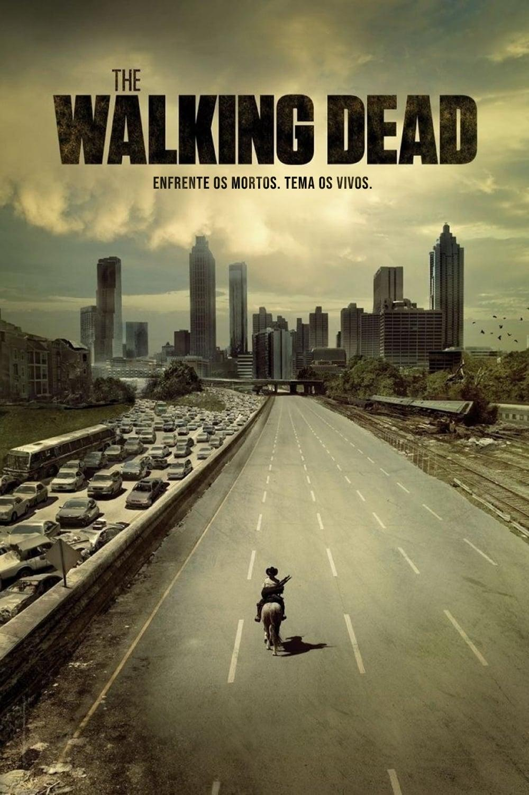
Conheça os personagens
Top 12:
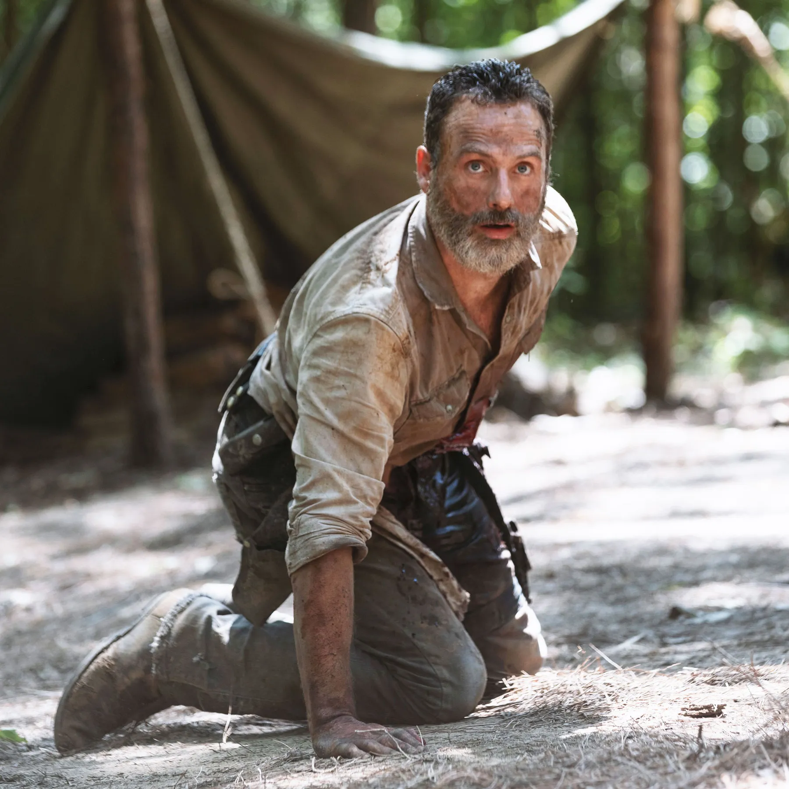
1. Rick Grimes
Ele é o líder do grupo de sobreviventes e um homem determinado a proteger seus companheiros em meio ao caos pós-apocalíptico.
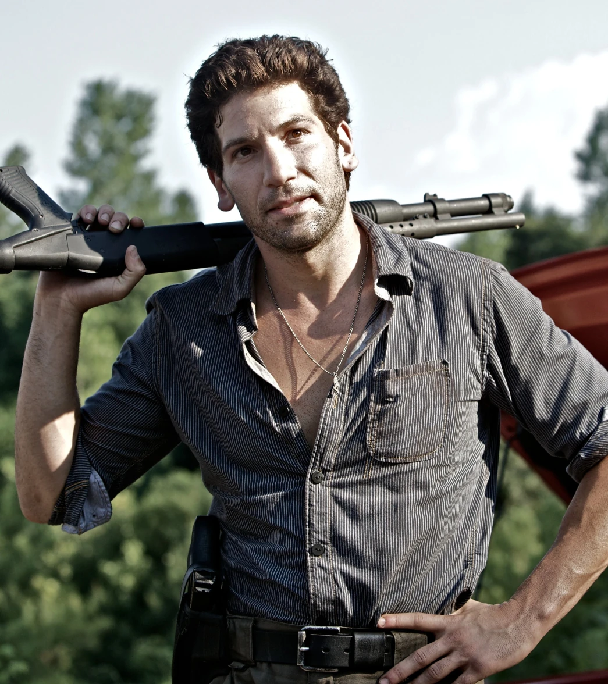
2. Shane Walsh
Ele é um dos membros mais experientes do grupo e um homem com habilidades de combate e liderança.
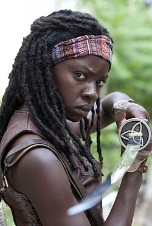
3. Michone
Ele é uma mulher forte e independente, conhecida por sua habilidade em lidar com situações perigosas e sua lealdade ao grupo.
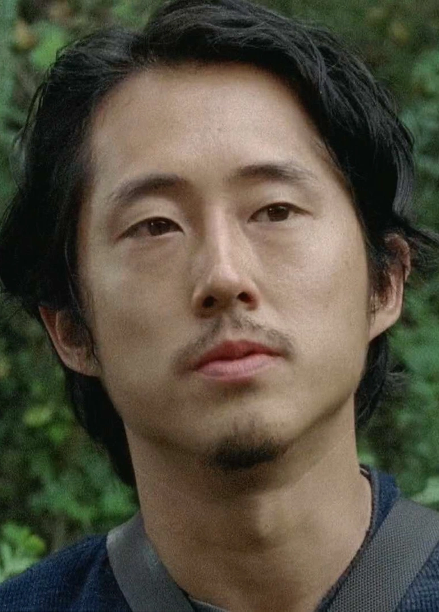
4. Glenn Rhee
Ele é um dos membros assiatico e com experiência em lidar com situações perigosas.
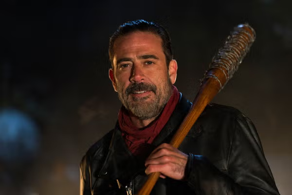
5. Negan
Ele é o líder de um grupo de sobreviventes e é conhecido por sua crueldade e habilidade em liderar.
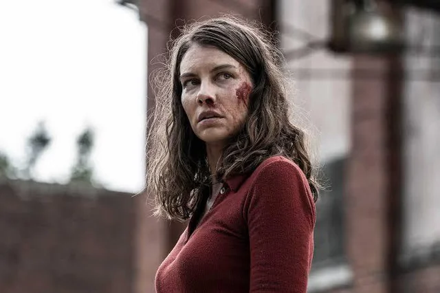
6. Maggie
Ele é uma mulher forte e independente, conhecida por sua habilidade em lidar com situações perigosas e sua lealdade ao grupo.

7. Daryl
Ele é um dos membros mais experientes do grupo e um homem com habilidades de combate e caça.
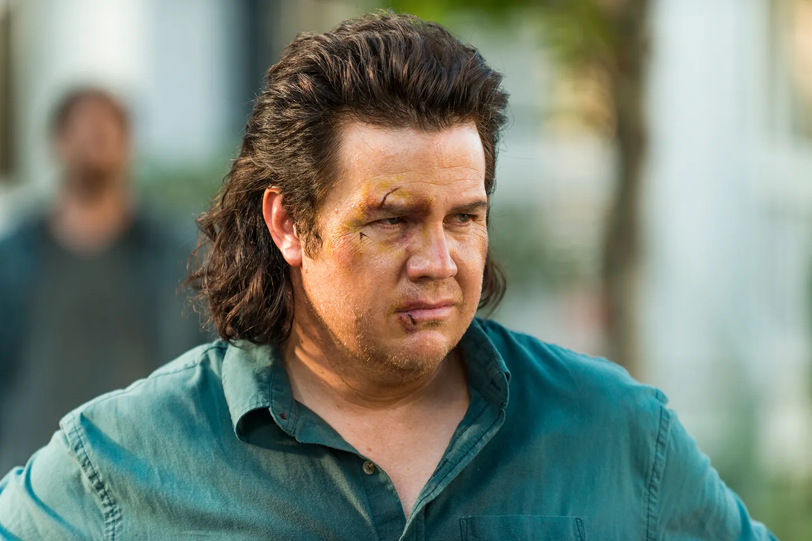
8. Eugene
Um dos membros mais inteligentes do grupo, conhecido por sua habilidade em resolver problemas complexos.
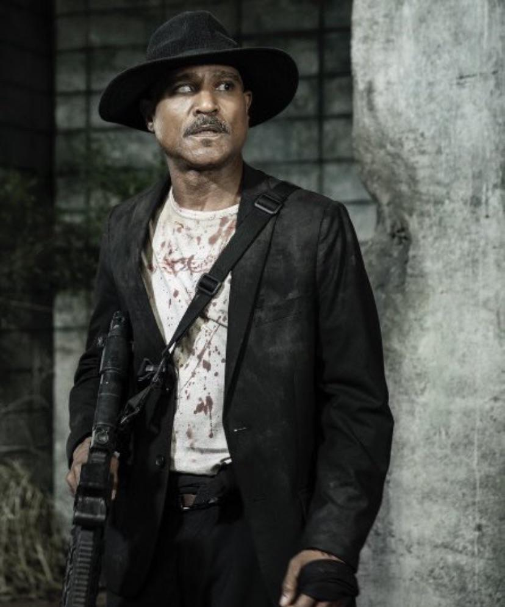
9. Gabriel
Um padre que entrou no grupo após a morte de sua família em um ataque zumbi.
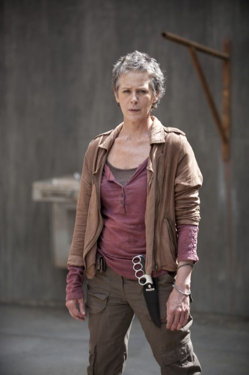
10. Carol
Uma mulher forte e independente, conhecida por ter sido maltratada e por sua determinação em proteger o grupo.
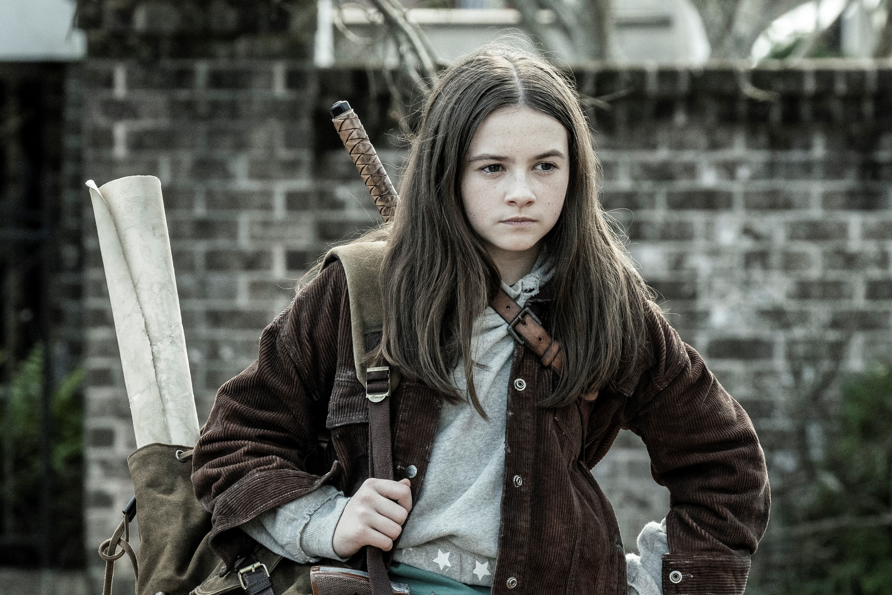
11. Judith
Judith é a filha de Rick Grimes e uma das principais personagens da série.
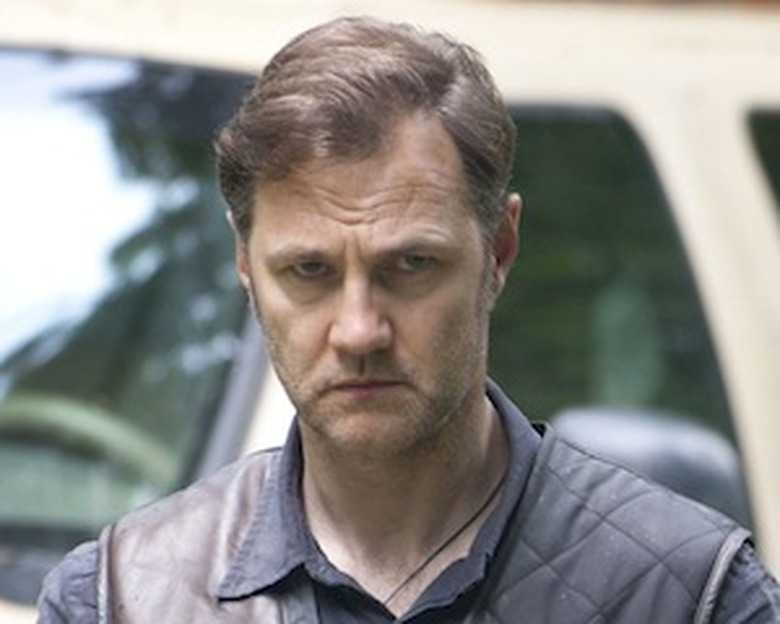
12. Governador
Um líder autoritário que busca controlar o grupo em vez de protegê-lo.